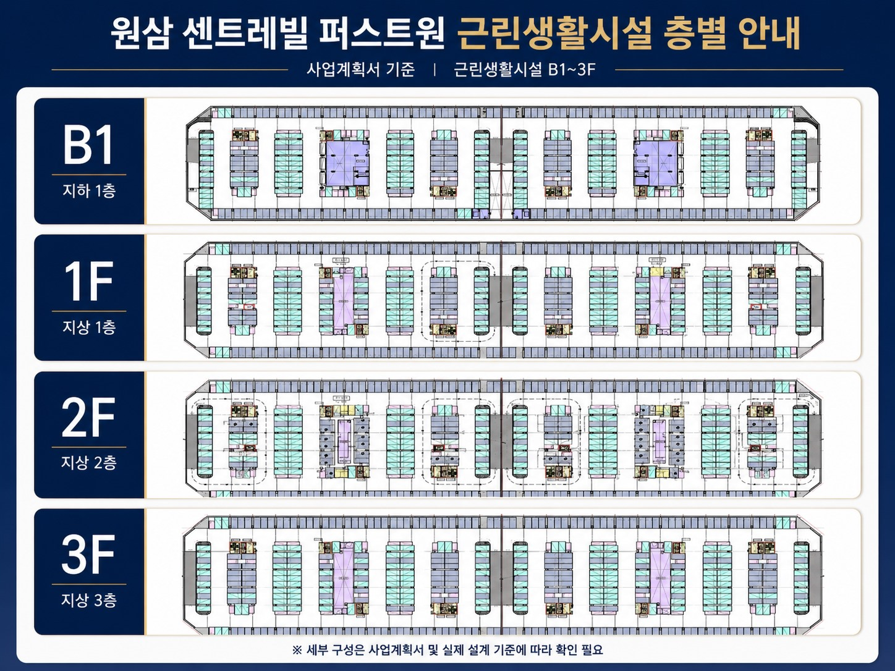

약 2,515평 규모로 지상 1층~3층 근린생활시설 계획을 검토합니다.
NEIGHBORHOOD COMMERCE
근린생활시설
가칭 SK원삼 센트레빌 퍼스트원 근린생활시설 구성 안내
반도체클러스터 배후 입지와 오피스텔 1,160실 연계 수요를 함께 검토할 수 있는 근린생활시설 자료입니다.

※ 세부 구성은 사업계획서 및 실제 설계 기준에 따라 확인이 필요합니다.
약 2,552평 규모로 E2-1과 함께 생활편의 수요를 검토합니다.
근린생활시설 구성비 약 20.1% 기준의 상업시설 계획입니다.
산업단지 내 낮은 상업용지 비율을 기준으로 희소성을 검토합니다.
배후 체류 수요
오피스텔 2,320실 배후 체류 수요와 산업단지 근무·방문 수요를 함께 살펴봅니다.
업종 검토
식음, 편의, 업무지원 업종 등 산업단지 생활편의 수요와 연결되는 업종을 검토할 수 있습니다.
검토 유의사항
세부 면적, 공급 조건, 모집 일정은 인허가 및 모집공고 확정 시 변경될 수 있으며 상담 시 최신 자료 기준으로 확인합니다.